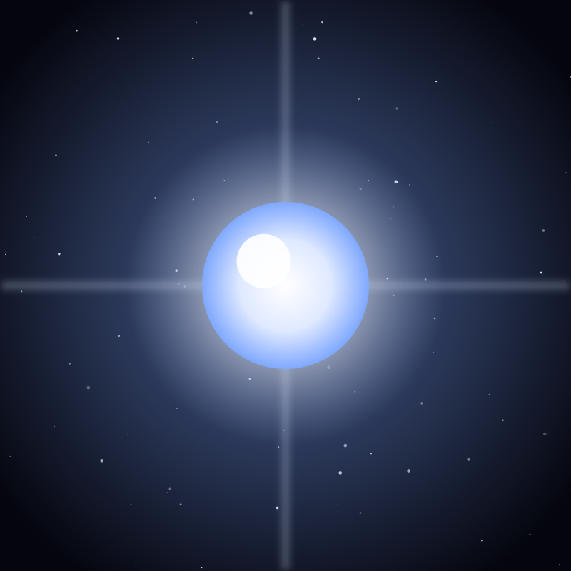

Star
Sirius
The brightest star in Earth's night sky, a blue-white star twice the Sun's mass with a faint white dwarf companion.
Object 17 of 26

Key facts
- Distance
- 8.6 light-years
- Radius
- 1.19 × Sun
- Mass
- 2.06 × Sun
- Spectral type
- A1V (main sequence)
- Surface temperature
- 9,940 K
- Luminosity
- 25.4 × Sun
- Companion
- Sirius B (white dwarf)
- Apparent magnitude
- -1.46 (brightest star)
Overview
Sirius is the brightest star in Earth's night sky, shining at magnitude -1.46 — outshining the next brightest star, Canopus, by a factor of two. It sits 8.6 light-years away in Canis Major, the Greater Dog, and marks the dog's chest.
It is a young, hot, blue-white star of spectral type A, twice the mass of the Sun and 25 times more luminous. Its light has been a fixed reference point for calendars and navigation for thousands of years.
The Sirius System
Sirius is not one star but two. Sirius A is accompanied by Sirius B, a white dwarf roughly the size of Earth but carrying the mass of the Sun — matter compressed so densely that a teaspoon of it would weigh tons.
Sirius B was predicted from wobbles in the orbit of A and first seen in 1862 by Alvan Graham Clark, making it the first white dwarf ever discovered. The pair orbit each other every 50 years, and the faint companion is easily lost in the glare of the primary.
A Star in Culture
The ancient Egyptians called it Sopdet and timed the flooding of the Nile by its heliacal rising, when it first appears above the horizon before dawn. To the Greeks it was Seirios, 'the scorcher', and to Rome its appearance with the Sun defined the Dog Days of summer.
It has featured in the navigation traditions of Polynesia and in the mythology of cultures from Japan to the Indigenous peoples of the Americas, largely because it is impossible to miss.
How to See It
Sirius is a winter star for the Northern Hemisphere and a summer star for the Southern. The easiest route is to find Orion's belt and follow the line of its three stars down and to the left; Sirius is the brilliant point at the end of it.
Binoculars show it clearly as a single white point, but a small telescope can reveal Sirius B about 10 arcseconds from its parent — a challenging catch because of the glare, best attempted when the pair is near their closest separation.